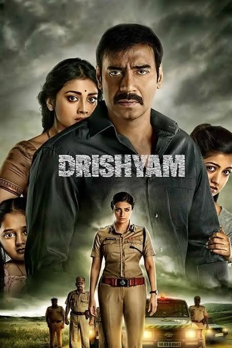
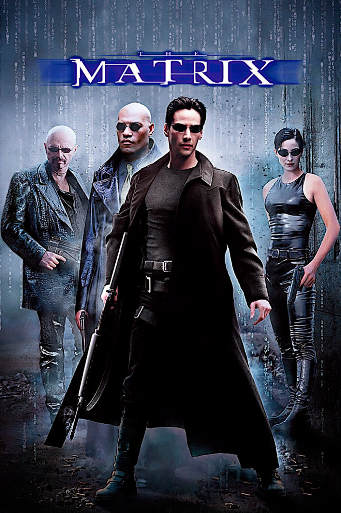
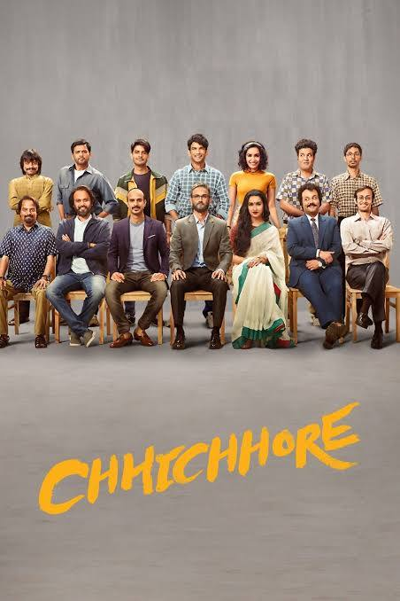

Raees

Raees (transl. Wealthy) is a 2017 Indian Hindi-language action film directed by Rahul Dholakia and produced by Red Chillies Entertainment and Excel Entertainment. It stars Shah Rukh Khan, Nawazuddin Siddiqui and Mahira Khan (in her only Hindi film acting credit). Raees is said to be based on the criminal Abdul Latif's life,however, the filmmakers have denied this claim.
The film was released on 25 January 2017 during India's Republic Day weekend.It received overall positive reviews from the critics, who appreciated the performances of Khan and Siddiqui, production design, cinematography and visual effects, and was a big success at the box office, becoming the 6th highest-grossing Hindi film of 2017. Raees was also the most pirated Hindi film of 2017. The film's soundtrack has also received over 160 crore (1.6 billion) streams on YouTube. The film received five nominations at the 63rd Filmfare Awards, including Best Actor for Khan.
Fan

Fan is a 2016 Indian Hindi-language action thriller film directed by Maneesh Sharma and co-written by Sharma and Habib Faisal. Produced by Aditya Chopra, the film stars Shah Rukh Khan in a dual role as filmstar Aryan Khanna and his obsessive fan Gaurav Chandna, who looks just like him. Gaurav beats up a rival actor to appease Aryan, but is instead punished by his idol; heartbroken, the fan plans revenge. The film also has an ensemble supporting cast.
Sharma had originally conceived the idea of Fan in 2006 and recited the story to Chopra, who advised him against the challenging project for his directorial debut. In the same year, Yash Chopra read it to Shah Rukh, who expressed interest in being part of the project. The project was revived in late 2013, and Shah Rukh underwent 3D scanning in 2014. Principal photography began in July 2014 and was completed by November 2015. Fan was a songless film; a soundtrack album consisting of a marketing song in different languages was composed by Vishal-Shekhar and the original score was done by Andrea Guerra.
Drishyam

Drishyam (transl. Visual) is a 2015 Indian Hindi-language crime thriller film directed by Nishikant Kamat. A remake of the eponymous 2013 Malayalam film starring Mohanlal, the film stars Ajay Devgn, Tabu and Shriya Saran. Ishita Dutta, Mrunal Jadhav, Rajat Kapoor, Kamlesh Sawant and Rishab Chadha play supporting roles.
The film was released in theatres worldwide on 31 July 2015, and in China in 2022. Upon its release, it was a critical and commercial success. A sequel titled Drishyam 2 was released in 2022.
Mardani 2

Mardaani 2 (transl. Masculine 2) is a 2019 Indian Hindi-language action thriller film written and directed by Gopi Puthran. It is produced by Aditya Chopra under Yash Raj Films. A sequel to the 2014 film Mardaani, the film stars Rani Mukerji in the lead role alongside Vishal Jethwa, and Jisshu Sengupta. The plot follows a police officer, Shivani Shivaji Roy's attempts to catch a 21 year old rapist and murderer.
Mardaani 2 was announced on 10 December 2018. Filming began in March 2019 and was extensively filmed in Rajasthan. The first look of the film was released in April 2019 with the release date announced in September 2019.
The film was released on 13 December 2019 to positive response from critics, with praise towards its screenplay, pace, direction and performances (particularly those of Mukerji and Jethwa). The film performed successfully at the box office and earned a worldwide gross of ₹67.12 crore (US$7.8 million). A sequel titled Mardaani 3 was announced on 13 December 2024 and will release in 2026.
Matrix

The Matrix is a 1999 science fiction action film written and directed by the Wachowskis. It is the first installment in the Matrix film series, starring Keanu Reeves, Laurence Fishburne, Carrie-Anne Moss, Hugo Weaving, and Joe Pantoliano. It depicts a dystopian future in which humanity is unknowingly trapped inside the Matrix, a simulated reality created by intelligent machines. Believing computer hacker Neo to be "the One" prophesied to defeat them, Morpheus recruits him into a rebellion against the machines.
Following the success of Bound (1996), Warner Bros. gave the go-ahead for The Matrix after the Wachowskis sent an edit of the film's opening minutes. Action scenes were influenced by anime and martial arts films, (particularly fight choreographers and wire fu techniques from Hong Kong action cinema). Other influences include Plato's cave and 1990s Telnet hacker communities. The film popularized terms such as the red pill, and popularised a visual effect known as "bullet time", in which a character's heightened perception is represented by allowing the action within a shot to progress in slow motion while the camera appears to move through the scene at normal speed.
Chhichhore

Chhichhore (transl. Frivolous) is a 2019 Indian Hindi-language coming-of-age comedy-drama film directed by Nitesh Tiwari, written by Tiwari in association with Piyush Gupta and Nikhil Mehrotra, and produced by Sajid Nadiadwala under Nadiadwala Grandson Entertainment, with Fox Star Studios acquiring the distribution rights. Based on Tiwari's experiences as a student of the Indian Institute of Technology, Bombay, the film stars late Sushant Singh Rajput, Shraddha Kapoor, Varun Sharma, Naveen Polishetty (in his Hindi Debut), Tahir Raj Bhasin, Tushar Pandey and Saharsh Kumar Shukla in the lead roles, with Shishir Sharma and Mohammad Samad in supporting roles.
Set parallelly in the 1990s and 2019, Chhichhore tells the story of Aniruddh "Anni" Pathak, a middle-aged divorced man whose son Raghav tries to commit suicide after failing to clear the JEE entrance examination, and who, despite survival, is unwilling to live due to the fear of being branded as a "loser", which makes a desperate Anni recount his own experience to Raghav of his own time at college, wherein he and his five friends too were called 'losers', and how they managed to remove that 'tag'; as he continues along to narrate his story, the other five join their friend and complete the story.
Train to Busan

Train to Busan (Korean: 부산행; RR: Busanhaeng; MR: Pusanhaeng; lit. To Busan) is a 2016 South Korean action horror film directed by Yeon Sang-ho and starring Gong Yoo, Jung Yu-mi, Ma Dong-seok, Kim Su-an, Choi Woo-shik, Ahn So-hee, and Kim Eui-sung The film mostly takes place on a KTX from Seoul to Busan as a zombie apocalypse suddenly breaks out in the country and threatens the safety of the passengers.
The film premiered in the Midnight Screenings section of the 2016 Cannes Film Festival on 13 May On 7 August, the film set a record as the first Korean film of 2016 to break the audience record of over 10 million theatergoers.
The movie successfully launched the Train to Busan film series, with the animated prequel Seoul Station released in 2016 and a standalone sequel named Peninsula released in 2020. Another installment and an American-produced adaptation are also in development.
Avengers:Infinity Wars

Avengers: Infinity War is a 2018 American superhero film based on the Marvel Comics superhero team the Avengers. Produced by Marvel Studios and distributed by Walt Disney Studios Motion Pictures, it is the sequel to The Avengers (2012) and Avengers: Age of Ultron (2015), and the 19th film in the Marvel Cinematic Universe (MCU). Directed by Anthony and Joe Russo and written by Christopher Markus and Stephen McFeely, the film features an ensemble cast including Robert Downey Jr., Chris Hemsworth, Mark Ruffalo, Chris Evans, Scarlett Johansson, Benedict Cumberbatch, Don Cheadle, Tom Holland, Chadwick Boseman, Paul Bettany, Elizabeth Olsen, Anthony Mackie, Sebastian Stan, Danai Gurira, Letitia Wright, Dave Bautista, Zoe Saldaña, Josh Brolin, and Chris Pratt. In the film, the Avengers and the Guardians of the Galaxy attempt to stop Thanos from collecting the six powerful Infinity Stones as part of his quest to kill half of all life in the universe.
Veer Zara

Veer-Zaara is a 2004 Indian Hindi-language romantic film directed and produced by Yash Chopra, and written by his son Aditya Chopra. It stars Shah Rukh Khan and Preity Zinta as the titular star-crossed lovers: Veer Pratap Singh is an Indian Air Force officer, and Zaara Hayaat Khan is the daughter of a Pakistani politician. Veer is imprisoned on false charges, and 22 years later, a young Pakistani lawyer, named Saamiya Siddiqui (Rani Mukerji), fights his case. Amitabh Bachchan, Hema Malini, Divya Dutta, Manoj Bajpayee, Boman Irani, Anupam Kher and Kirron Kher play supporting roles.
Chopra expressed his desire to make a comeback to the film industry after a gap of seven years, as he was unsatisfied with the scripts he had been offered. It was during this time that Aditya narrated a few scenes from a story he had written, which intrigued Chopra and sparked his interest to direct it. Chopra envisioned the film as a tribute to Punjab, aiming to capture the essence of the region. It was to be titled Yeh Kahaan Aa Gaye Hum, based on an eponymous song from Yash Chopra's Silsila (1981). Set in India and Pakistan, principal photography took place in Indian Punjab and in Mumbai; parts of the film were also shot in Pakistan. The soundtrack album, based on old compositions by Madan Mohan with lyrics by Javed Akhtar, was the highest-selling album of the year in India.
Avengers:Endgame

Avengers: Endgame is a 2019 American superhero film based on the Marvel Comics superhero team the Avengers. Produced by Marvel Studios and distributed by Walt Disney Studios Motion Pictures, it is the direct sequel to Avengers: Infinity War (2018) and the 22nd film in the Marvel Cinematic Universe (MCU). Directed by Anthony and Joe Russo and written by Christopher Markus and Stephen McFeely, the film features an ensemble cast which includes Robert Downey Jr., Chris Evans, Mark Ruffalo, Chris Hemsworth, Scarlett Johansson, Jeremy Renner, Don Cheadle, Paul Rudd, Brie Larson, Karen Gillan, Danai Gurira, Benedict Wong, Jon Favreau, Bradley Cooper, Gwyneth Paltrow, and Josh Brolin. In the film, the surviving members of the Avengers and their allies attempt to reverse Thanos's actions in Infinity War which erased half of all life in the universe.